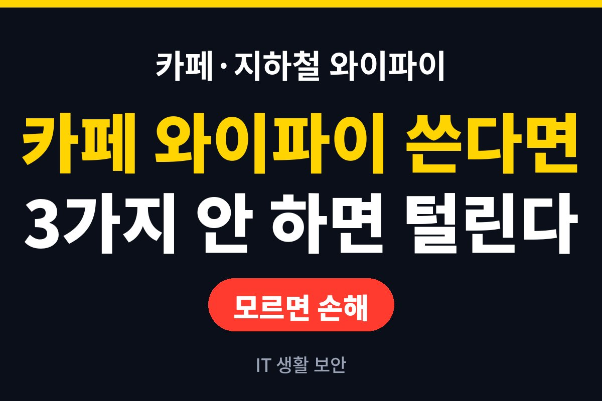
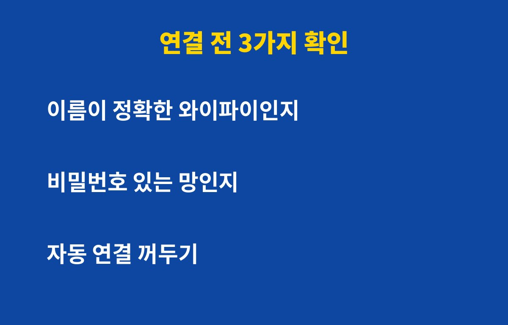
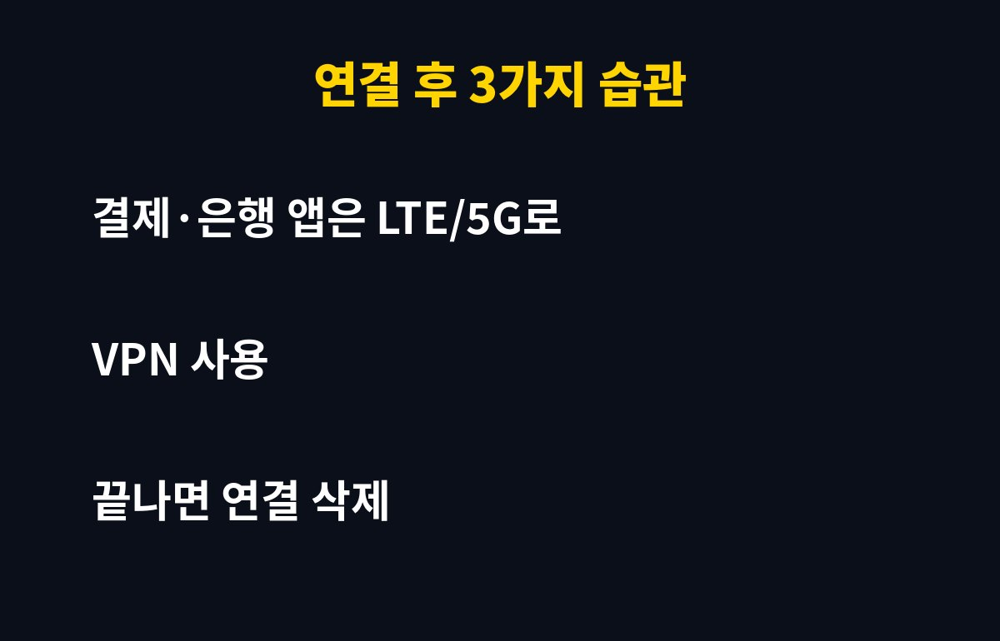

공용 와이파이는 연결 전 3가지만 확인해도 위험의 대부분을 줄일 수 있어요. 카페나 지하철에서 로그인과 결제를 자주 하신다면 꼭 보셔야 해요.
그런데 와이파이가 빠르고 비밀번호가 걸려 있다고 오히려 안심하면 더 위험할 수 있어요. 이유는 아래에 있어요.
공용 와이파이는 누구나 접속할 수 있어서 같은 망에 있는 다른 사람이 내 통신을 엿볼 가능성이 있어요. 특히 보안이 약한 망에서는 로그인 정보나 입력한 내용이 노출될 수 있어요.
더 조심할 점은 가짜 와이파이예요. 카페 이름과 비슷하게 만든 이름으로 접속을 유도해 정보를 가로채는 수법이 알려져 있어요. 이름 철자가 조금이라도 다르면 연결하지 마세요.
첫째, 매장 직원에게 정확한 와이파이 이름을 물어보세요. 둘째, 비밀번호가 없는 열린 망은 가급적 피하세요. 셋째, 스마트폰의 자동 연결 기능을 꺼두세요. 자동 연결이 켜져 있으면 나도 모르게 낯선 망에 붙을 수 있어요.

가장 쉬운 방법은 민감한 작업은 모바일 데이터로 하는 거예요. 은행, 증권, 카드 결제, 쇼핑몰 로그인은 와이파이를 끄고 LTE나 5G로 진행하세요. 데이터가 아깝다면 최소한 결제만이라도 그렇게 하세요.
| 상황 | 추천 행동 |
|---|---|
| 뉴스·영상 보기 | 공용 와이파이 사용 가능 |
| SNS·메일 로그인 | 가급적 모바일 데이터, 2단계 인증 켜기 |
| 은행·결제 | 반드시 모바일 데이터 |
| 사용 후 | 저장된 와이파이 삭제 |

네, 있어요. 사용이 끝나면 저장된 네트워크 삭제를 눌러 두세요. 그래야 다음에 같은 이름의 가짜 망에 자동으로 붙는 일을 막을 수 있어요. 앱과 운영체제를 최신 상태로 유지하는 것도 기본이에요.
보안이 걱정된다면 믿을 만한 VPN을 쓰는 것도 방법이지만, 출처가 불분명한 무료 VPN은 오히려 위험할 수 있으니 조심하세요.
정리하면, 이름 확인, 자동 연결 끄기, 결제는 데이터로, 사용 후 삭제 이 네 가지만 기억하세요. 도움이 되셨다면 구독해 두시고 다음 생활 보안 글도 받아보세요.
기사·공식 발표 기준이며 출시·가격 정보는 바뀔 수 있어요.